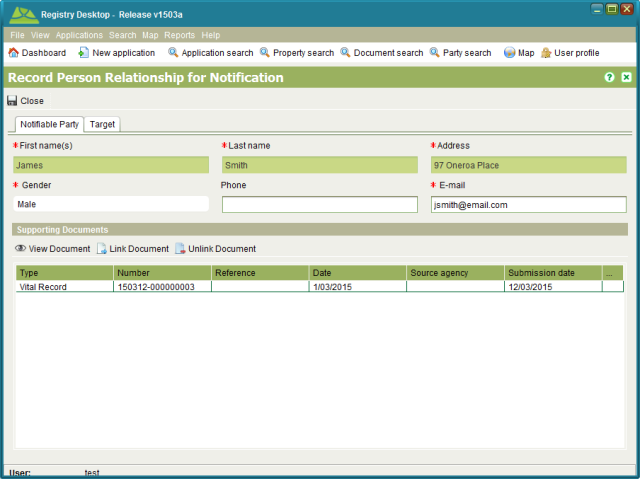
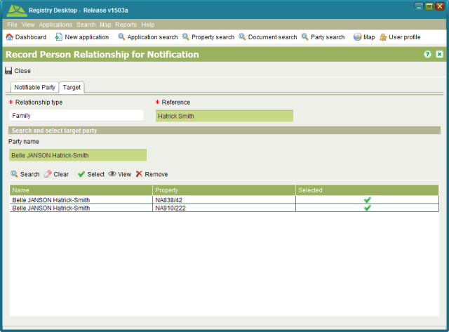

The Person Relationship screen can be used to record a relationship between two parties such
as a husband and wife, parent and child, grandparent and grandchild or other similar
relationships. The purpose is to safeguard the interests of one of the parties (the
notifiable party) and inform them of any changes to the property rights held exclusively by
the other party (the target party). The goal of this feature is to prevent the
notifiable party from being unduly disadvantaged if the target party sells, trades or
transfers the property rights they hold. To access the Person Relationship screen you need to
lodge an application containing one of the following services; Record Person Relationship or
Cancel Person Relationship. Once the application is lodged and assigned, you then need to Start the service
from the Application Details Services tab.
Start the service
from the Application Details Services tab.

Person Relationship - Notifiable Party tab

Person Relationship - Target tab
Record the details of the party to be notified on the Notifiable Party tab. Notifications are sent via email, so an email address is mandatory. To create a Person Relationship, you need a copy of Vital Record such as a Birth Certificate, Marriage Certificate, Death Certificate, etc. to verify the relationship between the two parties. Use the Link Document tool to link a scanned copy of Vital Record proving the validity of the relationship.
On the Target tab, select the appropriate Relationship type and enter a reference. You then
need to identify the target party by entering their name in the Party name field and clicking
 Search to locate all property the party
holds rights to
Search to locate all property the party
holds rights to  Select the appropriate
search results and
Select the appropriate
search results and  Close to save your changes.
Close to save your changes.